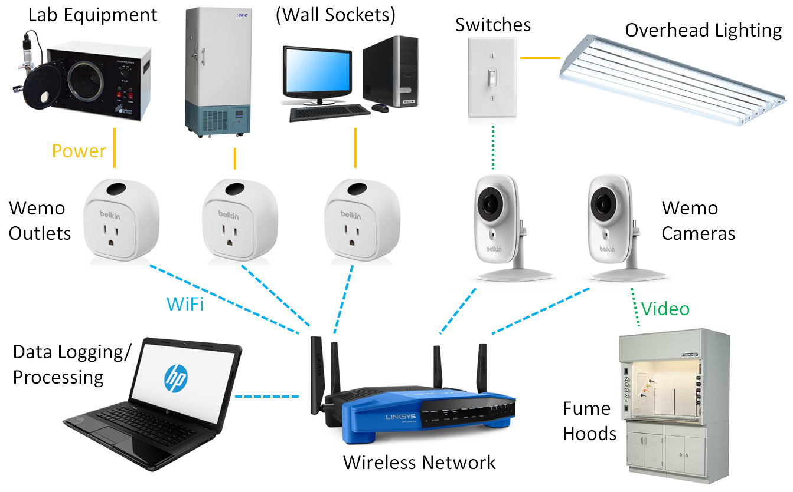
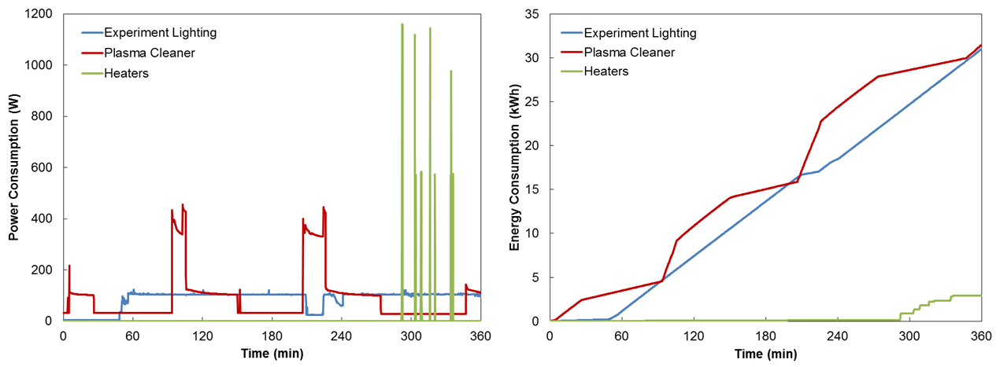

MIT Green Labs Innovation Award Proposal
Submitted by Daniel J. Preston and Ariel S. Anders
On behalf of the Device Research Laboratory under the guidance of Professor Evelyn N. Wang
Executive Summary
We implemented a full-lab energy use monitoring network which is capable of providing data in real time and also logging for later analysis. We propose that this lab space be used to test the efficacy of various “green” schemes such as posting signage, appointment of a lab energy officer, or even a chime that reminds users to turn off lights as they leave. The energy monitoring system will provide quantitative results as to whether these methods lead to energy savings and which are the most effective. We will also implement a program in the mechanical engineering department at MIT to provide lab glove recycling throughout the department and fund new innovative ideas for conservation. Finally, we will found two Laboratory Energy Assessment Centers, one at MIT and one at an affiliate university, each composed of a faculty advisor, a graduate student, and two undergraduates. The goal of these Centers will be to perform detailed energy assessments of laboratories on campus and provide itemized energy consumption data to the laboratories along with recommendations to save energy within the lab in a comprehensive report to be presented to the lab PI. As a pilot program, one to two assessments will be conducted each month.
Initial Project Implementation with Seed Funding
The MIT Device Research Lab (DRL) led by Professor Evelyn Wang is located in rooms 7-021, 7-034, and 5-004. The scope of the initial implementation was mainly limited to room 7-021 and is described below in detail. The parts of the project that were deployed in all three rooms included low-flow faucet aerators, waste and recycling signage, metal recycling, and a lab glove recycling program. The low flow faucet aerators were installed on four sinks in the three rooms and reduced flow from approximately 2.2 gpm to 0.5 gpm, resulting in a corresponding estimated reduction in water consumption of 77% throughout the labs. The waste and recycling signage was installed over all receptacles, including in the office and kitchen space in 7-034, and the bins were arranged so that a recycling bin was placed adjacent to every waste bin. Metal recycling was implemented by adding a satellite metal recycling bin in the lab which is emptied at the machine shop metal recycling facility when full. Lab glove recycling was implemented by placing brown bins with the label “lab glove recycling” and accompanying wall signage at the exits to all of the lab spaces. Email correspondence was sent out to inform the lab users of the new glove recycling program, and it was discussed in group meetings. To date, we have recycled approximately 2.5 full 14-quart bins of used gloves.
While these modifications spanning all of the DRL lab spaces resulted in clean water savings, promoted recycling, and raised awareness about the “green” effort within our lab, the main thrust of the conservation effort was in energy consumption monitoring, specifically within room 7-021, which we envision as a test lab to determine the efficacy of different energy conservation methods, knowledge which we will disseminate to help other labs decide which measures to use. This concept of a test lab is discussed in detail in the following section; here, we describe how we have transformed the lab into an Internet of Things (IoT) where all of the energy consuming devices in the lab are monitored in real time and the data is also logged for later analysis.
We have purchased and installed a dedicated wireless network within our lab that communicates with plug-level energy monitoring devices called Wemo switches, shown in Figure 1. These Wemo switches are plugged directly into outlets and then lab equipment is plugged into the Wemo switches where the power consumption (solid yellow lines in Figure 1) is measured; the

Figure 1. Schematic of the fully integrated lab space with power consumption monitoring and logging. A local wireless networks connects the Wemo outlets and cameras to the data logging and processing unit. The Wemo outlets are able to directly measure power consumption of lab equipment that plugs in to wall sockets. Meanwhile, the Wemo cameras feed live video of energy consuming devices that are typically harder to log data for without intrusive hardware, such as overhead lighting and fume hoods, to the data processing unit, where custom image processing software determines the power consumption of these units in real time.
Wemo switches then send power consumption data over the wireless network (dashed blue lines in Figure 1) to our server in real time, where the data is recorded. In addition to the live energy consumption visualization, the Wemo switches can be used to turn off lab equipment that has been left on by accident from a remote location – for example, a user could shut down a furnace that they forgot to switch off even after they have left campus and gone home. However, the Wemo switches are limited to devices which plug into wall outlets, which excludes large energy consumers such as overhead lighting and fume hoods. We were particularly interested in monitoring the energy consumed by these devices because it is very easy to save energy without changing lab operation; for example, while an experiment may always need to use a certain amount of energy to achieve a desired result, simply shutting the fume hood sash and turning off the lights when leaving the room is not an inconvenience and saves a large amount of power (~4 kW savings when closing the fume hood and ~1 kW savings when turning off all of the overhead lights). Unfortunately, it is difficult to monitor the energy consumption of these devices without significant maintenance for new instrumentation installation, and in some cases (like overhead lighting), MIT Facilities is not currently offering this service. Therefore, we took energy monitoring into our own hands and installed Wemo cameras on our wireless network. These cameras can record live video of things like light switches (dashed green line in Figure 1). Live video of light switches is useful because it contains the data that shows whether the lights are on or off. Humans can easily look at a video of a light switch and determine whether it is on (up) or off (down). It is not quite so easy for computers to do this, but we wrote custom image processing software that is able to look at the light switches through the camera video feed and

Figure 2. Image processing of a live video stream of a panel of light switches. The method was tested in every configuration of switches and had a 100% success rate.
determine whether they are on or off, shown in Figure 2. Then, by telling the computer which switches control which lights and also recording the wattage off of the light bulbs (which is within ±15% of the real power consumption depending on the ballast factor), we are able to log how much power is being consumed by overhead lighting in real time. A similar image processing method is used for fume hoods, either by observing the energy consumption gage on their flow meters or by observing the status (open/closed) of the sash.
With the system installed and running in our lab, we began to gather data. The data recorded during an actual experiment in the lab is presented in Figure 3. This experiment consisted of three main energy consuming devices: light to visualize a sample, a plasma cleaner to clean the sample, and a heater. We see in the power consumption plot (left) that the heaters require the most power by far at over 1,000 W. The plasma cleaner requires just under half of that, around 400 W, and the lighting requires only about 100 W. However, when we integrate the data to determine the actual total energy used, we find that the heaters consumed less than 10% of the energy. The lighting and plasma cleaner consumed about the same amount of energy, 30 kWh.

Figure 3. Data logging during a typical experiment in the lab that consisted of lighting to visualize a sample (blue), plasma cleaning the sample (red), and heating the sample (green). The plot on the left shows the instantaneous power consumption during the experiment over time, and the plot on the right shows the cumulative energy consumption, which is the integral of the data in the plot on the left.
This type of analysis is incredibly useful in determining what may initially be non-intuitive patterns in energy consumption. In addition, this particular case was useful because it illustrated that leaving the light on during the whole experiment even though it only needed to be on when visualizing the sample (about 5% of the total time) was consuming nearly half of the total energy used – turning off the lighting when not in use therefore reduced the energy consumption of this experimental procedure by ≈50%.
In addition to energy monitoring and analysis for particular experiments, we compiled a table of the typical energy usage for lab equipment that we have posted for labmates to refer to when designing experiments. This table, shown on the following page, was generate by using the Wemo outlets to record power consumption data.
Table 1 includes several interesting observations. First, the LED lighted power strip consumes 0.2 W of power, while an unlighted power strip consumes essentially no power. Future purchases of power strips should be made with this in mind to avoid waste. Second, the Wemo outlets themselves consumed just over 1 W of power. This is an unfortunate consequence of the vast amount of information we are able to log with the devices, but the usefulness of that information outweighs what adds up to less than the equivalent of one incandescent bulb to monitor power consumption in the entire lab, particularly in the context of the Test Lab concept described in the next section.
Table 1. Experimentally measured power consumption of lab equipment in the DRL
Lab Equipment |
Power Consumption (W) |
Unlighted Power Strip |
0.0 |
LED Lighted Power Strip |
0.2 |
Wemo Power Monitor |
1.3 |
Desktop Computer Tower |
104.8 |
Desktop Monitor |
13.2 |
Laptop Computer |
12.6 |
Lab Task Light: Low |
26.6 |
Lab Task Light: Medium |
34.6 |
Lab Task Light: High |
39.7 |
Optical Microscope Light |
59.9 |
Heat Gun: Low |
575.0 |
Heat Gun: High |
1152 |
Vacuum Pump: Startup |
506.1 |
Vacuum Pump: Steady State |
402.7 |
Hot Plate: Startup |
1021 |
Hot Plate: Steady 150 °C |
202.7 |
Hot Plate: Steady 300 °C |
317.1 |
Ultrasonicator |
25.6 |
Plasma Cleaner: Standby |
3.2 |
Plasma Cleaner: Operation |
365.9 |
Energy Conservation Best Practices Test Lab
We plan to use our fully-outfitted lab space to monitor energy consumption for nearly all of the equipment used in the lab, and we hope to eventually use this data gathering network not only for the ability to view energy consumption and remotely shut off equipment but also to test the efficacy of different methods to promote energy conservation. For example, if we hang up signs in certain areas of the lab that encourage users to shut down equipment when not in use, we can quantitatively demonstrate the effect of the signage by referring to our recorded energy consumption metrics. Therefore, this project has the potential to reveal the true efficacy of signage and other typical energy conservation promotion schemes by looking at the before-and-after energy consumption. If we are able to utilize the quantitative energy use measurements to determine the efficacy of signage and other typical “green awareness” schemes, we could show whether these schemes are effective and also which methods are best – for example, what if posting signs is simply a waste of paper and doesn’t result in any less consumption? What if the best method to promote sustainability is actually a weekly email or voting for a lab advocate? We hope to find out, potentially as collaboration with experts in psychology or human behavior studies, which we plan to organize as a part of the Green Labs innovation award initiative.
MIT MechE Lab-Assist Program
The MIT MechE Lab-Assist Program will draw on a small segment of the innovation award to promote “green” practices within our department. Half of the \$400 in funding that is designated for the Lab-Assist Program will go to expanding the glove recycling program by purchasing 22 additional glove recycling bins, labeling the bins, and providing them to labs in the department along with signage. There are already over 10 labs interested in joining the glove recycling program. The other half of the Lab-Assist Program funding will be discretionary funding that will be provided to other labs in the departments for small projects that are innovative, creative, and get members of the department involved in conservation efforts.
Laboratory Energy Assessment Center at MIT
The main impact of the Green Labs innovation award funds will go to the founding of the Laboratory Energy Assessment Center (LEAC) at MIT. The goal of this center will be to provide detailed energy assessments for laboratories on campus that reveal the total energy usage and the components of total energy used by different process is the lab, along with recommendations for how to reduce energy consumption. This service will be provided free of charge for MIT labs at first, with the vision of eventually providing free assessments for labs in the greater Boston area to promote energy conservation.
This program is inspired by the Industrial Assessment Center program funded by the Department of Energy and operated from the campuses of universities nationwide. As a participant in this program during his undergraduate degree, Daniel Preston, a co-author of this proposal, has experience traveling to factories and plants, measuring the overall energy consumption and individual energy streams such as lighting, heat, steam, etc., generating detailed recommendations for how these plants can save energy and money, and then presenting all of these findings in a comprehensive report. He was also an assessment team lead, managing a group of three students on the energy assessments and in writing the reports. During his career with the Industrial Assessment Center, Dan provided recommendations to plants that resulted in savings of millions of kWh and hundreds of tons of CO2 emissions. This experience makes him the ideal candidate as a co-founder for the LEAC.
The program at MIT will consist of a team of one faculty advisor, one graduate student advisor, and two undergraduate students hired and funded through the UROP program, ideally one from Electrical Engineering and Computer Science (EECS) and one from Mechanical Engineering (MechE. The undergraduate students will conduct the laboratory assessments using a mobile energy monitoring system based on the schematic in Figure 1 using the Wemo outlets and cameras. The innovation award funding primarily goes towards purchasing this mobile energy monitoring system. The students will deploy this system to log data for a period of one day to one week in a laboratory that is being assessed. After logging the data and also making observations in the lab and speaking with lab members, the students will write up a report on the lab’s energy consumption and opportunities to save energy or other resources over the course of several weeks and present the findings to the laboratory’s PI. The EECS student will maintain and update the software and networking as well as export the data, and the MechE student will specialize in performing the energy usage calculations, but both students will work together to write the report under the guidance of a graduate student advisor who may be from either department. We will also have a faculty advisor on the LEAC to facilitate arrangement of lab assessments with other faculty members at MIT and provide advice to the graduate student advisor and the undergraduates.
This opportunity provides multiple benefits. Primarily, and following the goal of the Center, energy assessments are performed and recommendations are provided that will promote energy and resource conservation on MIT’s campus. Additionally, the undergraduate students learn from the program and may transfer this experience to careers in energy conservation or at least bring with them a green mindset throughout their lives. Finally, the graduate student advisor will gain experience not only in energy efficiency and conservation but also in management of the undergraduate students, which will prove beneficial for careers in either industry or academia.
Laboratory Energy Assessment Center at Affiliate University
We plan to create a broader impact by forming a parallel LEAC at an affiliate university. This affiliate LEAC will also be advised by a faculty member, and the energy assessments will be performed by undergraduate students. The benefits of this program are twofold: we have the potential to double our impact in energy conservation by reaching twice as large a footprint, and we will be able to share information and experiences that may be diverse and individual to each university. Two candidates have been identified, both based on their co-location with an Industrial Assessment Center with which they can collaborate and reach out to for resources (such as flow meters, pressure gages, etc.) if necessary. These two candidates are UMass Amherst and The University of Alabama. Due the proximity of UMass Amherst to MIT and potential overlap in footprint if the LEAC programs expand to labs in the surrounding community, The University of Alabama (UA) is preferred. The head of the Industrial Assessment Center at UA is headed by Prof. Keith Woodbury, and he would be an ideal candidate for faculty advisor for the LEAC. Undergraduate researchers are available through the Computer Based Honors Program at UA, where they receive course credit for working on undergraduate research projects; working with the LEAC would count for credit for these students.
Budget
The proposed budget is presented in Table 2. Note that we have also applied for additional funding of \$1,000 from the MIT Sustainability Fund which, if awarded, will be split between the MechE Lab-Assist Program and the two LEACs.
Table 2. Proposed budget for the Green Labs innovation award funding.
Budget Item |
Cost ($) |
7-021 Complete Energy Monitoring “Test Lab” |
600 |
15x Wemo plug load energy monitor ($50 ea.) |
750 |
1x Webcam for fume hood energy monitoring |
50 |
Miscellaneous wiring and cables |
50 |
Surplus from MIT Green Labs seed funding |
(250) |
MIT MechE Lab-Assist Program Funding |
400 |
22x Glove recycling bins ($9 ea.) |
198 |
Discrestionary funding for "Innovative Ideas" |
202 |
MIT LEAC Lab Assessment Kit |
2000 |
Laptop for data logging |
850 |
WiFi router for local network connection |
100 |
14x Wemo plug load energy monitor ($50 ea.) |
700 |
2x Webcam for fume hood/light switch monitors |
100 |
Fluke 323 True-RMS clamp meter |
100 |
5x MIT LEAC logo polo shirts for assessments |
100 |
Miscellaneous wiring and cables |
50 |
2x MIT UROP student |
3080 |
2x MIT UROP direct student funding (by Feb. 26 '17) |
(3080) |
Affiliate LEAC Lab Assessment Kit |
2000 |
Laptop for data logging |
850 |
WiFi router for local network connection |
100 |
14x Wemo plug load energy monitor ($50 ea.) |
700 |
2x Webcam for fume hood/light switch monitors |
100 |
Fluke 323 True-RMS clamp meter |
100 |
5x Affiliate LEAC logo polo shirts for assessments |
100 |
Miscellaneous wiring and cables |
50 |
2x Undergraduates for course credit or volunteer |
0 |
GRAND TOTAL |
5000 |